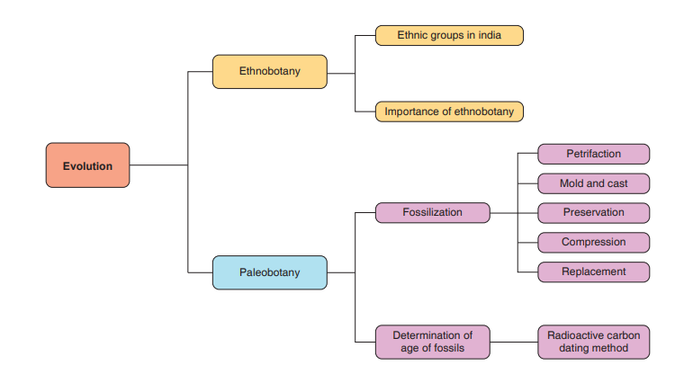
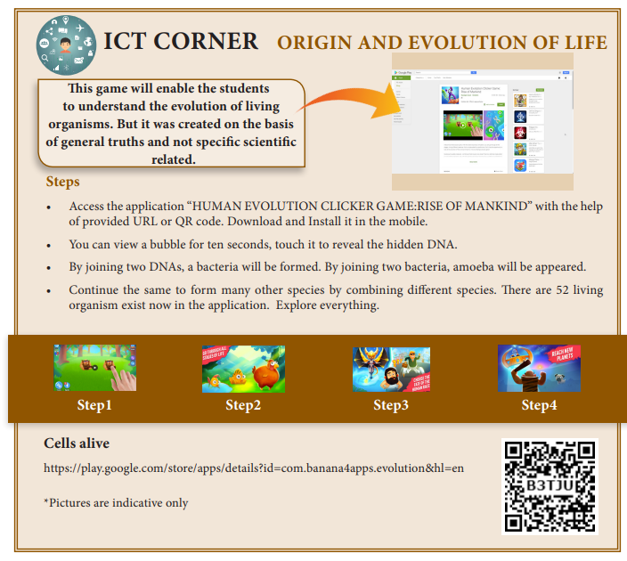

TEXTBOOK EVALUATION
1 Choose the correct answer
- Biogenetic law states that dash.
a) Ontogeny and phylogeny go together
b) Ontogeny recapitulates phylogeny
c) Phylogeny recapitulates ontogeny
d) There is no relationship between phylogeny and ontogeny
- The use and disuse theory were proposed by dash.
1 Charles Darwin
2 Ernst Haeckel
3 Jean Baptiste Lamarck
4 Gregor Mendel
- Palaeontologists deal with
a) Embryological evidences
b) Fossil evidences
c) Vestigial organ evidences
d) All the above
- The best way of direct dating fossils of recent origin is by
a) Radio-carbon method
b) Uranium lead method
c) Potassium-argon method
d) Both (a) and (c)
- The term Ethnobotany was coined by
a) Khorana
b) J.W. Hansberger
c) Ronald Ross
d) Hugo de Vries
2 Fill in the blanks
- The characters developed by the animals during their life time, in response to the environmental changes are called dash.
- The degenerated and non-functional organs found in an organism are called dash.
- The forelimbs of bat and human are examples of dash organs.
- The theory of natural selection for evolution was proposed by dash.
3 State true or false. Correct the false statements
- The use and disuse theory of organs was postulated by Charles Darwin.
- The homologous organs look similar and perform similar functions but they have different origin and developmental pattern.
- Birds have evolved from reptiles.
4 Match the following
Column A Column B
a) Atavism caudal vertebrae and vermiform appendix
b) Vestigial organs a forelimb of a cat and a organs bat’s wing
c) Analogous organs rudimentary tail and organs thick hair on the body
d) Homologous organs a wing of a bat and organs a wing of an insect
e) Wood park radiocarbon dating
f) W.F. Libby Thiruvakkarai
5 Answer in a word or sentence
- A human hand, a front leg of a cat, a front flipper of a whale and a bat’s wing look dissimilar and adapted for different functions. What is the name given to these organs?
- Which organism is considered to be the fossil bird?
- What is the study of fossils called?
6 Short answers questions
- The degenerated wing of a kiwi is an acquired character. Why is it an acquired character?
- Why is Archaeopteryx considered to be a connecting link?
- Define Ethnobotany and write its importance.
- How can you determine the age of the fossils?
7 Long answer questions
- Natural selection is a driving force for evolution-How?
- How do you differentiate homologous organs from analogous organs?
- How does fossilization occur in plants?
8 Higher Order Thinking Skills (HOTS)
- Arun was playing in the garden. Suddenly he saw a dragon fly sitting on a plant. He observed the wings of it. He thought it looked similar to a wing of a crow. Is he correct? Give reason for your answer.
- Imprints of fossils tell us about evolution- How?
- Octopus, cockroach and frog all have eyes. Can we group these animals together to establish a common evolutionary origin. Justify your answer.
REFERENCE BOOKS
1. B. S.Tomar and S. P. Singh, An Introduction to General Biology, 9th Edition, Rastogi Publications, Meerut.
2. Stephen.C. Stearns and Rolf. F. Hoekstra Evolution - An introduction
3. Archer, S.D.J., Asuncion de los, R., Lee, K.C., Niederberger, T.S., Cary, S.C., Coyne, K.J., Douglas, S., Lacap-Bugler, D.C. and Pointing, S.B., 2017. A Endolithic microbial diversity in sandstone and granite from the McMurdo Dry Valleys, Antarctica. Polar biology, 40 (5): 997-1006.
INTERNET RESOURCES
http://www.nhs.uk http://www.eniscuola.net/en/2012/11/29/ exobiology/ https://en.wikipedia.org/wiki/Astrobiology
![This picture shows concept map of evolution evolution has three parameters 1. origin of life 2. evidences of evolution 3. theories of evolution. origin of life has following views special creation spontaneous generation (abiogenesis) biogenesis extra terresterial or cosmic origin chemical evolution of life. evidences for evolution has three types 1. morphology of anatomy homologous organs analogous organs vestigial organs atavism 2. embryology biogenetic law paleontology fossils theories of evolution 1. lamarckism use and disuse theory 2. darwinism theory of natural selection.](images/image-315.png)

